Altera Quartus II 12.0sp2 Web Editionのインストール方法
はじめに
ここでは，AlteraのFPGA/CPLD開発ソフトウェアの無償版である，Quartus II Web Editionのインストール方法を説明します． 以降で掲載するスクリーンショットは，下記の環境でインストールした際のものです．
Quartus II Web Editionは32bit版のWindowsのみを公式にサポートしていますが，64bit版のWindowsにもインストールして使用することができます．
| OS | Microsoft Windows 7 Professional x64 Service Pack 1 |
|---|---|
| Quartus II | Altera Quartus II 12.0sp2 Web Edition |
myAlteraアカウントの作成
AlteraのWebページから開発ソフトウェアなどをダウンロードする際には，メールアドレスなどの個人情報の入力が求められます． Alteraの製品で開発を継続していく予定であれば，アカウントの作成をおすすめします．
ソフトウェアのダウンロード
AlteraのWebページにアクセスし，ページ上部の「開発ツール&サービス」から「開発ソフトウェア」を選択します． 次に，ページ左部のリンクから「Quartus II ウェブ・エディション」を開き，ページ中央の「ソフトウェアのダウンロード 無償 Web Edition」を選択します．
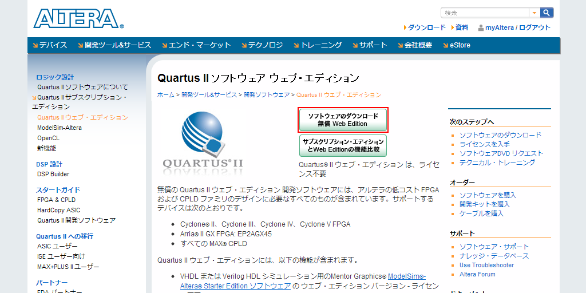{kind=link}
2012年8月現在の最新版はv12.0 Service Pack 2でした．ダウンロード・オプション1の表から，Windows版のファイル名「(バージョン)_quartus_free_windows.exe」を選択します． このとき，Quartus II サブスクリプション・エディションと間違っていないか確認するようにしましょう．
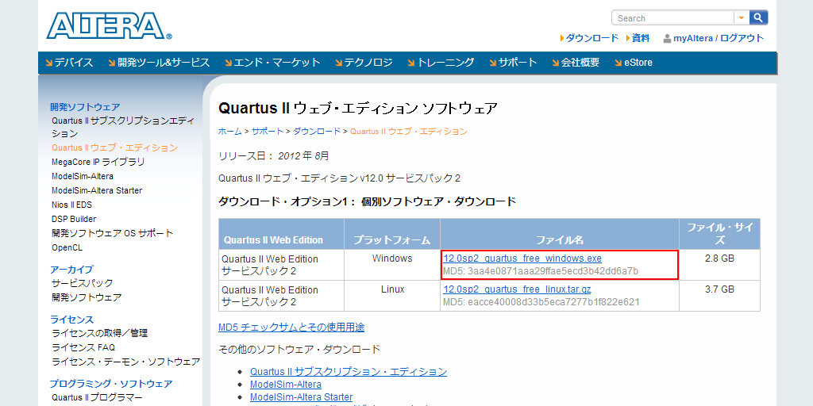{kind=link}
次のmyAlteraアカウントでログインするとダウンロードページに遷移します． Google Chromeなどを使用していてダウンロードが自動的に開始されない場合は，ページ下部の赤線で囲んだリンクを選択します．
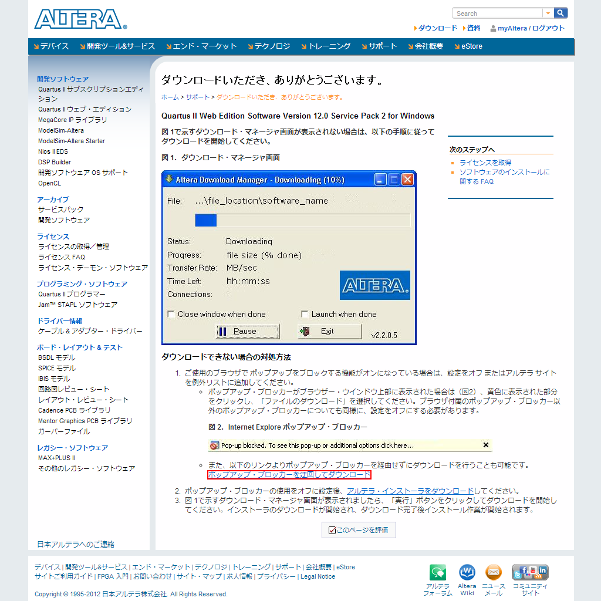{kind=link}
Download Managerを使用したダウンロードが推奨されているようですが，ページ下部の赤線で囲んだリンクを選択することで，通常のダウンロードが実行できます． 経験的には，夜間（日本標準時）より昼間の方がダウンロード速度が速いことが多いです．ダウンロード所要時間は1時間弱を見込んでおきましょう．
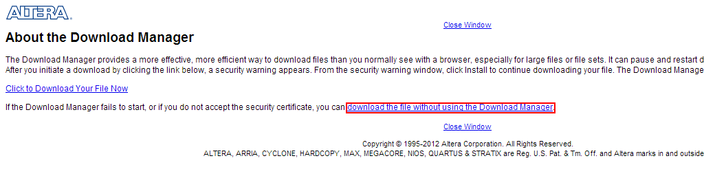{kind=link}
ソフトウェアのインストール
v13.0からインストーラ（インストール方法）が若干変更されました．現行（v13.0）のインストール方法については下記のページをご覧ください．
ダウンロードした実行ファイルを管理者権限で実行します． 一時ファイルの解凍先を指定するように促してくるので，任意のフォルダを指定します． 通常はデフォルト設定のままで良いと思います．「Install」をクリックします．
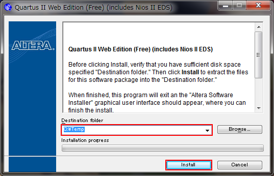{kind=link}
ファイルの解凍が完了するとインストーラが起動します． インストール中にウィルス対策ソフトウェアやファイアウォールが有効な場合，インストールが正常に実行されない可能性があります． したがって，この時点で，ウィルス対策ソフトウェアやファイアウォールを一時的に無効にしておいた方が良いと思われます． 「Next」をクリックします．
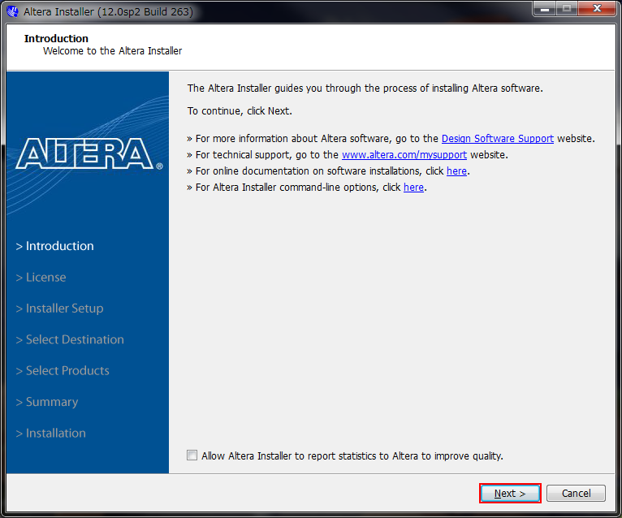{kind=link}
「I agree to the terms of the license agreement.」にチェックを入れて，「Next」をクリックします．
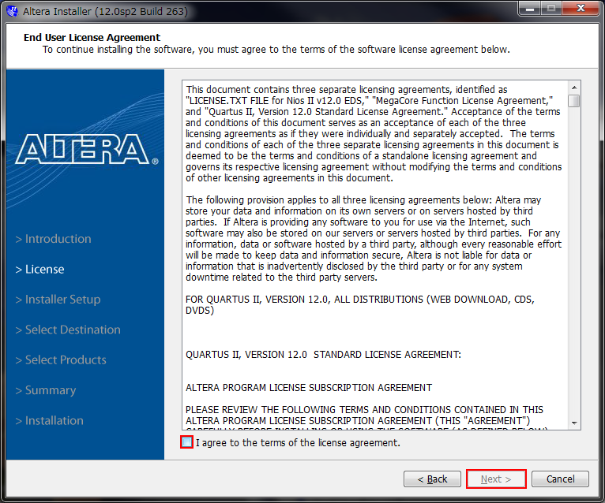{kind=link}
通常はデフォルト設定のままで良いので，「Next」をクリックします．
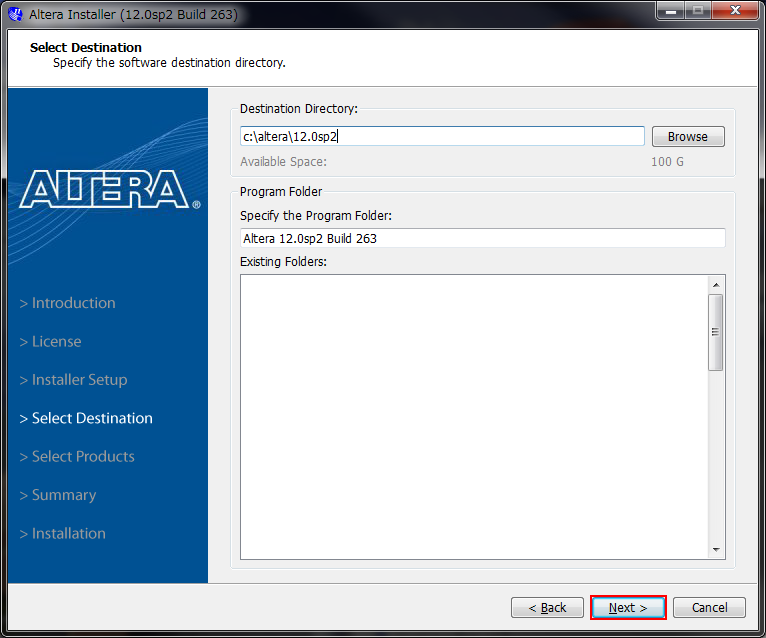{kind=link}
インストールする製品を選択します． 特定のデバイスファミリのみを使用することが確定している場合は，不要なデバイスファミリのチェックを外しても良いでしょう． しかし，後々の追加インストールは面倒ですし，近年のPCのHDDは大容量で，空き領域を圧迫する心配もほとんどありません． ゆえに通常はデフォルト設定のままで良いので，「Next」をクリックします．
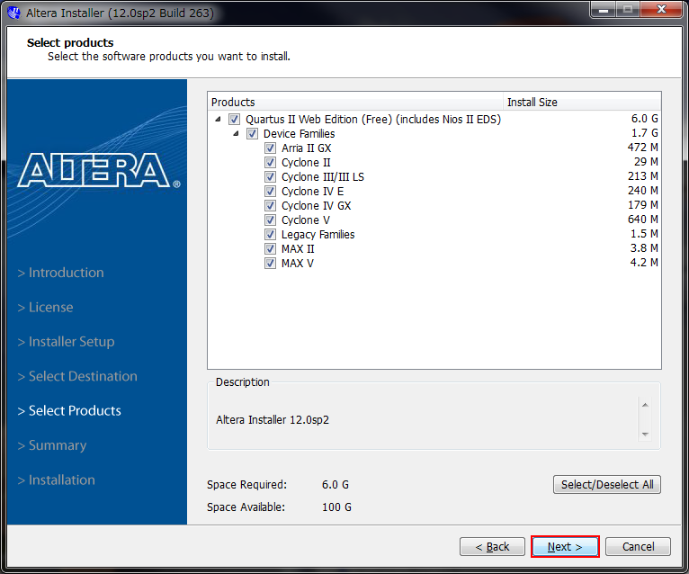{kind=link}
インストール概要が表示されるので，確認した後に「Next」をクリックします．
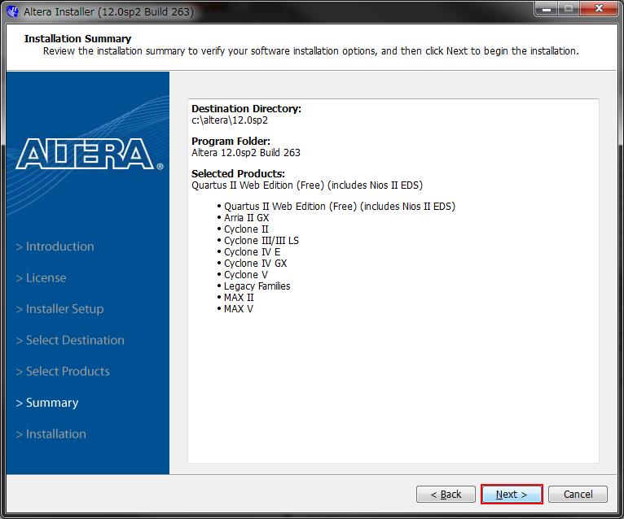{kind=link}
インストールが進行します． 「Create Desktop Shortcuts」のチェックを外すことで，デスクトップ上のショートカット作成を阻止できます． インストール中にインストーラの応答がなくなったり，フリーズしているように見えるかもしれませんが，焦らず待ちましょう．
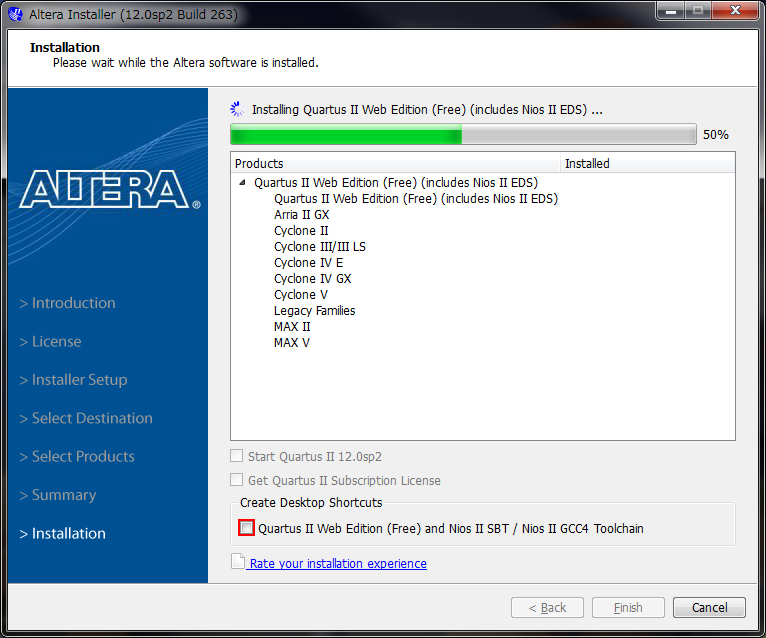{kind=link}
TalkBackを有効にするかどうかを指定します．通常はデフォルト設定のまま，チェックが入ったままの状態で問題ありません．
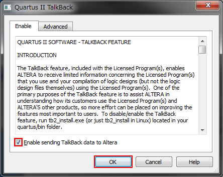{kind=link}
一時ファイルを削除するかどうか聞いてきます．通常はインストール後不要となりますので，「Yes」をクリックして削除しましょう．
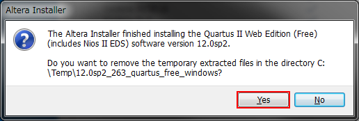{kind=link}
インストール完了を知らせるウィンドウです． サブスクリプション・エディションのライセンスを取得する必要はないので，チェックを外しています．
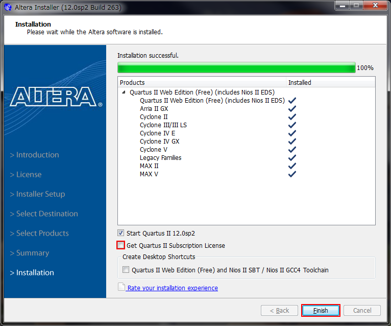{kind=link}
Quartus IIの初期起動ウィンドウです． 中央の「Run the Quartus II software」にチェックを入れ，「OK」をクリックします．
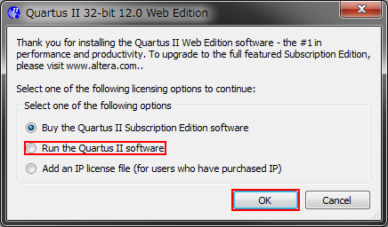{kind=link}
Quartus IIの起動ウィンドウです． 左下の「Don't show this screen again」にチェックを入れて，ウィンドウを閉じます．
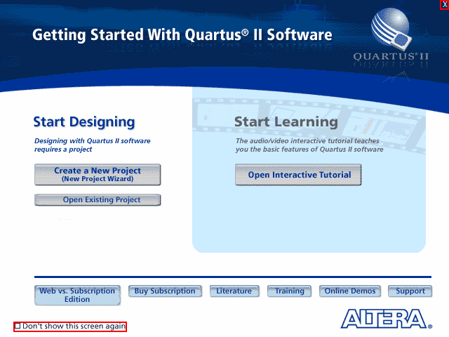{kind=link}
以上で，Quartus IIのインストールが完了しました．
インストール後，USB-Blasterが認識されない場合
HDLを記述して，いざFPGAに書き込み！…という段階で発覚する不具合です． Quartus IIのインストール時にウィルス対策ソフトやファイアウォールが有効になっていると，これらの誤動作によって，Altera JTAG Serverのインストールが正常に実行されないのが原因ではないかと思います． 解決方法をblogに書きましたので，ご覧ください．